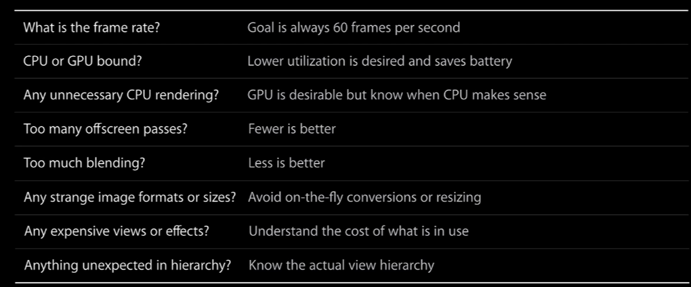

Author: Charles Zhu
Summary: notes for 419
Intro
主要从原理上剖析，教你如何检查程序性能瓶颈所在。涉及到的系统框架如下：

Core animation pipeline
Core animation为iOS动画提供了很多便利，调用以及之后发生的事情如下图：

在App中调用CA，CA会encode显示的view，交由CA内的一个渲染服务器。
渲染服务器收到指令后，会先decode view，在下一帧刷新的时候去绘制，然后交由GPU去渲染。
CPU渲染结束后，会在下一次帧刷新的时候，显示到屏幕。
由于除了App以外的部分都是iOS系统完成的，因此我们将注意力放在App的相关部分。
Commit Transation
this part affect application developers the most， 包含4步：

4 phases
layout:
- layoutSubviews overrides are invoked
- View creation, addSubview:
- Populate content, database lookups
- Usually CPU bound or I/O bound 注：database指的是需要本地化的UI控件
Display:
- Draw contents via drawRect: if it is overridden
- String drawing
- Usually CPU or memory bound
Prepare:
- Image decoding
- Image conversion
注：要使用推荐的png，如果是gpu不支持的格式就需要进行此部分消耗，也是cpu bounds
Commit
- Package up layers and send to render server
- Recursive
- Expensive if layer tree is complex
Rendering Conceptes
介绍渲染的基本概念，涉及gpu概念较多，不太明白。
Tile based rendering
页面划分成小格，每个小格细分成2个三角形，三角形再细分成更小的三角形...(离散化)，这样gpu就可以单独处理每一个tile。这样在hue系统下，可以决定哪些像素可见，并呈现何种形状(what pixel shade to run). all GPU
Render passes
- command buffer: render server generate with OpenGL command and submitted to GPU
- Tiler: real tiling work, output is written in Parameter Buffer
- Parameter Buffer: all geometry is processed or buffer is full, and then will go to next phase
- Render: output is written in render buffer
- render buffer
Example masking
a masking example to show how render processing

这样基本上可以了解gpu的渲染过程。
UIBlurEffect
UIVisualEffectView with UIBlurEffect
UIBlurEffect style会影响渲染过程 渲染的过程：
Performance considerations:
- UIBlurEffect adds multiple offscreen passes depending on style
- Only dirty regions are redrawn
- Effect is very costly:
-->UI can easily be GPU bound
-->Keep bounds of view as small as possible
-->Make sure to budget for effect
UIVibrancyEffect
注：先做blur effect
Performance considerations:
- UIVibrancyEffect adds two offscreen passes
- UIVibrancyEffect uses expensive compositing filter for content
- Use UIVibrancyEffect on small regions
- Only dirty regions are redrawn
- UIVibrancyEffect is very costly on all devices
-->UI can easily be GPU bound
-->Keep bounds of view as small as possible
-->Make sure to budget for effects
Rasterization
Performance considerations:
- Use to composite to image once with GPU
- Enable with shouldRasterize property on CALayer
- Extra offscreen passes when updating content
- Do not overuse, cache size is limited to 2.5x of screen size
- Rasterized images evicted from cache if unused for more than 100ms
typical use case
Group Opacity
Performance considerations:
- Disable with allowsGroupOpacity property on CALayer
- Will introduce offscreen passes: If layer is not opaque (opacity != 1.0) And if layer has nontrivial content (child layers or background image)
- Sub view hierarchy needs to be composited before being blended Always turn it off if not needed 注： offscreen 非常消耗gpu
Tools
检测性能工具
Performance Investigation Mindset

使用Instruments中core animation模版，查看当前的layer 注：补充debug option说明：
- Color Blended Layers: Shows blended view layers. Multiple view layers that are drawn on top of each other with blending enabled are highlighted in red. Reducing the amount of red in your app when this option is selected can dramatically improve your apps performance. Blended view layers are often the cause for slow table scrolling.
- Color Hits Green and Misses Red: Marks views in green or red. A view that is able to use a cached rasterization is marked in green.
- Color Copied Images: Shows images that are copied by Core Animation in blue.
- Color Immediately: When selected, removes the 10 ms delay when performing color-flush operations.
- Color Misaligned Images: Places a magenta overlay over images where the source pixels are not aligned to the destination pixels.
- Color Offscreen-Rendered Yellow: Places a yellow overlay over content that is rendered offscreen.
- Color OpenGL Fast Path Blue: Places a blue overlay over content that is detached from the compositor.
- Flash Updated Regions: Colors regions on your iOS device in yellow when that region is updated by the graphics processor.
iPhone Simulator->Debug，可以看到color xxx layer
Case Studies
几个常见问题
Fictitious Photo Applications
-
shadow creating ： cell的阴影创建
//wrong CALayer *imageViewLayer = cell.imageView.layer; imageViewLayer.shadowColor = [UIColor blackColor].CGColor; imageViewLayer.shadowOpacity = 1.0; imageViewLayer.shadowRadius = 2.0; imageViewLayer.shadowOffset = CGSizeMake(1.0, 1.0); //right imageViewLayer.shadowPath = CGPathCreateWithRect(imageRect, NULL); 2. round thumbnail: never use layer to create if there are many cells
solution:
Summary
(copy from ppt) Offscreen passes are expensive
- Use Core Animation instrument to find them
- Know what you can do to avoid them
Measure performance across different devices
- Use OpenGL ES Driver instrument for GPU time
- Use Time Profiler instrument for CPU time
Know your view hierarchy and any hidden costs
1。 This is especially true for table cells and scrolling
Tools

注：要实现流畅度好的app，offscreen render越少越好。利用本篇的方法，可以迅速的定位症结，从而提升app性能。